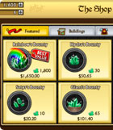

Глобальные и периодические исследования по функциональности игр
Мы постоянно отслеживаем и анализируем изменения в функциональности более 1000 мобильных и социальных игр в различных странах мира
Наши решения
-
Глобальные исследования
ПодробнееАнализ функциональности игр
Страны, регионы и весь мир
Популярность и тренды
-
Отчёты по изменениям игр
ПодробнееЕженедельная отчётность
Скриншоты и описания
Выборка любых игр
-
Playliner Platform
ПодробнееСравнение и выявление трендов
Функциональные параметры
База данных более 1000 игр
Подписка на рассылку
Получайте на почту информацию о новых отчётах, бесплатных решениях, скидках и акциях.
Исследования
-
Какими бывают VIP-статусы в играх
- США
- Мобайл
- 5 страниц
Рынок основных механик, жанров, сеттингов и визуализации топа кассовых мобильных игр США на платформах iOS и Android, включая прогнозы до конца 2016 года.
-
Жанры и сеттинги – Россия и США 2015
- США
- Мобайл, сошуал
- 35 страниц
Рынок основных жанров, сеттингов и визуализации кассовых мобильных игр России на iOS и Android. Изменения участников с 2015 по 2016 года, а также прогнозы до конца 2016 года.
-
Какие механики попадают в кассовый топ?
- США
- Мобайл
- 35 страниц
Многие разработчики игр часто ориентируются на самые коммерчески успешные проекты, которые находятся на самой вершине гроссинга США в GooglePlay и AppStore.
-

Как устроены магазины валют в топовых играх?
- США
- Мобайл, сошуал
- 35 страниц
При разработке или поддержке free-2-play-игры часто возникает вопрос – как правильно оформить окно приобретения премиум-валюты и как настроить скидки.
ЧТО КЛИЕНТЫ ГОВОРЯТ О НАС
В моем опыте использования сервиса PlayLiner.com я бы отметил четыре важных момента: систематизация данных, база скриншотов, сравнение проектов и тесное сотрудничество команды.
Антон Логвинов
Обзорщик из интернетовВ моем опыте использования сервиса PlayLiner.com я бы отметил четыре важных момента: систематизация данных, база скриншотов, сравнение проектов и тесное сотрудничество команды.
Дмитрий Мезенин
dmezenin.ru, дизайнерВ моем опыте использования сервиса PlayLiner.com я бы отметил четыре важных момента: систематизация данных, база скриншотов, сравнение проектов и тесное сотрудничество команды.

Сергей Галёнкин
Wargaming.netВ моем опыте использования сервиса PlayLiner.com я бы отметил четыре важных момента: систематизация данных, база скриншотов, сравнение проектов и тесное сотрудничество команды.
Сергей Галёнкин
Wargaming.netВ моем опыте использования сервиса PlayLiner.com я бы отметил четыре важных момента: систематизация данных, база скриншотов, сравнение проектов и тесное сотрудничество команды.
Сергей Галёнкин
Wargaming.netВ моем опыте использования сервиса PlayLiner.com я бы отметил четыре важных момента: систематизация данных, база скриншотов, сравнение проектов и тесное сотрудничество команды.
Антон Логвинов
Обзорщик из интернетовВ моем опыте использования сервиса PlayLiner.com я бы отметил четыре важных момента: систематизация данных, база скриншотов, сравнение проектов и тесное сотрудничество команды.
Дмитрий Мезенин
dmezenin.ru, дизайнерВ моем опыте использования сервиса PlayLiner.com я бы отметил четыре важных момента: систематизация данных, база скриншотов, сравнение проектов и тесное сотрудничество команды.
Сергей Галёнкин
Wargaming.netВ моем опыте использования сервиса PlayLiner.com я бы отметил четыре важных момента: систематизация данных, база скриншотов, сравнение проектов и тесное сотрудничество команды.
Сергей Галёнкин
Wargaming.netВ моем опыте использования сервиса PlayLiner.com я бы отметил четыре важных момента: систематизация данных, база скриншотов, сравнение проектов и тесное сотрудничество команды.
Сергей Галёнкин
Wargaming.netВОЗМОЖНОСТИ ПЛАТФОРМЫ
Поиск игр с нужной вам функциональностью
Найдите определенные игры из топа кассовых игр США по платформам iOS и Android, где есть необходимая вам функциональность — турниры, битва между юнитами, альянсы, механика мач3, 3д-графика и т. п.)
Изучение игр по параметрам с описанием и скриншотами
Изучайте игры, не играя в них. Каждая карточка игры разбита на большое количество функциональных параметров, связанных в среднем с более чем150 скриншотов с подробным описанием возможностей игры.
Сравнения игр между собой
Вы можете подробно сравнивать игры между собой по функционалу. Вам нужно найти различия в турнирах всех топовых игр жанра Poker? А может быть вы хотите найти различия в кланах в Unit Battle'ах? Нет проблем.
История популярности параметров
Получите информацию по популярности параметров игр с 2013 по 2016 года. Какой сеттинг сейчас в тренде? Какие механики и модули развиваются в стратегиях и гоночных играх? Все это вы можете узнать, изучив историю популярности параметров.
Свяжитесь c нами
Мы играем в игры и делаем любые исследования по их функциональности.
Вам нужно что-то особенное? Свяжитесь с нами!
МЕТОДОЛОГИЯ
-
Для проведения исследований мы вручную собираем большое количество данных с более 1000 кассовых игр мобильных и социальных платформ по всем основным странам мира.
-
Данные структурируются с помощью нашей платформы Playliner Platform и проводится глубокий анализ.
-
Основной упор сделан на функциональные возможности игр и поиск взаимосвязей между ними. Каждая игра разбирается на несколько сотен блоков (например, сеттинг, основная и дополнительная механика, монетизация, чат, банк валюты, возможности юнитов и т.д.) с привязанным к ним скриншотами и описанию возможностей.
-
Всё это позволяет нам быстро находить и изучать актуальную для рынка информацию, которую впоследствие мы упаковываем в общие или индивидуальные отчеты.